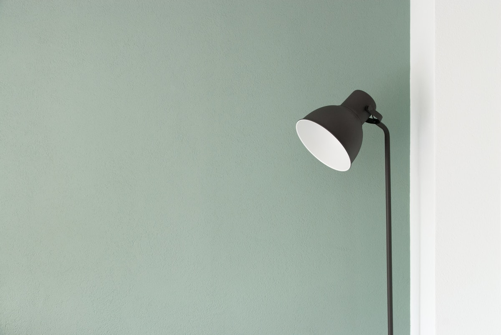
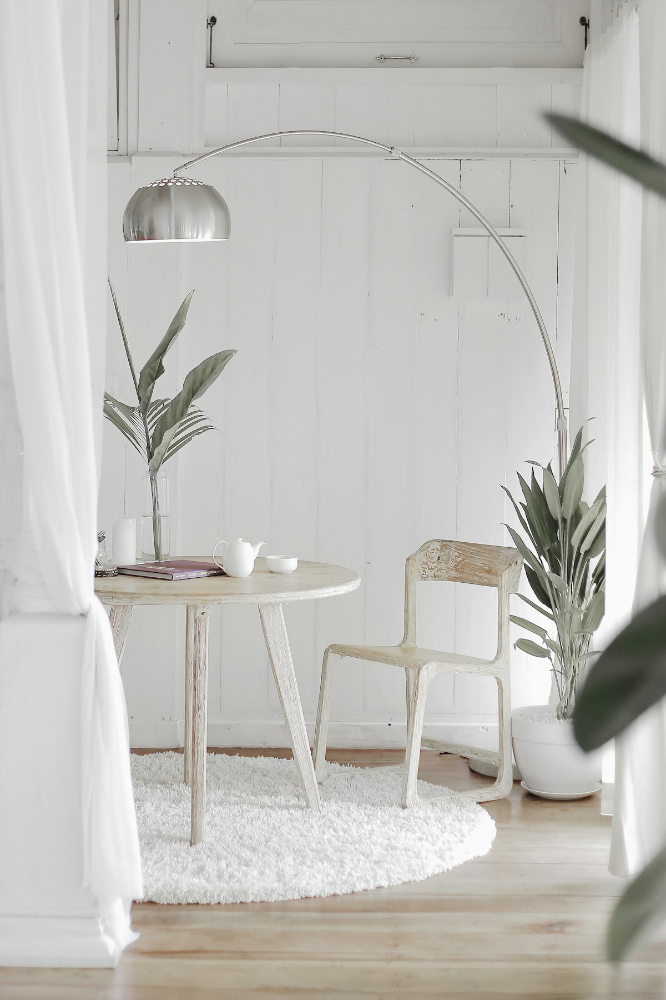

自己
为什么四十岁以后，
越来越不想解释自己
一篇关于边界与沟通的文章
继续阅读知若初见，心旷神怡
很多事，
四十岁以后才看懂。
关于自己、人与人，以及那些走过以后才明白的事。
如果不用再证明自己，
你还会继续现在的生活吗？
自己
一篇关于边界与沟通的文章
继续阅读人生阶段
知道不快乐，为什么仍然不改变？
继续阅读人生阶段
一篇关于生活秩序与重新选择的文章
继续阅读人间
时间变少以后，关系如何重新选择。
自己
生活没有出错，心里却提不起劲。
人生阶段
知道不快乐，为什么仍然不改变？
故事
一段关系，一次选择，一个转身。
说说你的故事本期发现
用不同的视角，理解同一段人生。

从情绪、需要与关系模式出发，观察自己的经验。这里的内容不用于心理诊断。
看见人与人之间的期待、边界与矛盾，不急着给一个人下结论。
从身份与生活重心的变化，理解四十岁以后遇到的选择。
这些是不同的理解视角，不是统一的科学结论。
第一期
知若初见 Podcast · 预告
节目筹备中

视频 · TED
从时间感出发，重新理解年龄、关系和生活目标。
播客
年长女性谈事业、爱情、错误和人生选择。
专题采访
从92岁回头看工作、年龄、自由和选择。
读者小调查
你为什么来到这里？花一分钟告诉我们。
参与小调查